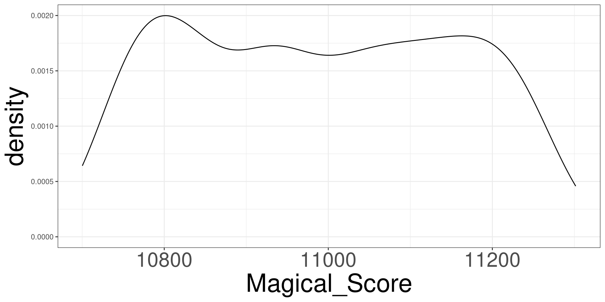
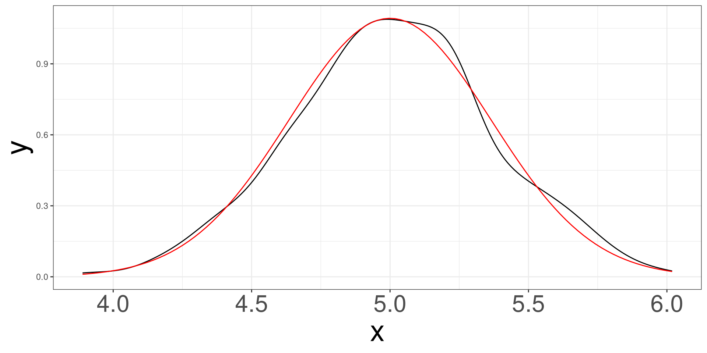

Sampling Distribution
2025-04-01
Sampling Distribution
Sampling Distribution
Simulating Unicorns
Central Limit Theorem
Common Sampling Distributions
Sampling Distributions for Regression Models
Sampling Distribution
Sampling Distribution is the idea that the statistics that you generate (slopes and intercepts) have their own data generation process.
In other words, the numerical values you obtain from the lm and glm function can be different if we got a different data set.
Some values will be more common than others. Because of this, they have their own data generating process, like the outcome of interest has it’s own data generating process.
Sampling Distributions
- Distribution of a statistic over repeated samples
Standard Error
The Standard Error (SE) is the standard deviation of a statistic itself.
SE tells us how much a statistic varies from sample to sample. Smaller SE = more precision.
Modelling the Data
\[ Y_i = \beta_0 + \beta_1 X_i + \varepsilon_i \]
- \(Y_i\): Outcome data
- \(X_i\): Predictor data
- \(\beta_0, \beta_1\): parameters
- \(\varepsilon_i\): error term
Error Term
\[ \varepsilon_i \sim DGP \]
Randomness Effect
The randomness effect is a sampling phenomenom where you will get different samples everytime you sample a population.
Getting different samples means you will get different statistics.
These statistics will have a distribution on their own.
Randomness Effect 1

Randomness Effect 2

Randomness Effect 3

Randomness Effect 4

Randomness Effect 5

Simulating Unicorns
Sampling Distribution
Simulating Unicorns
Central Limit Theorem
Common Sampling Distributions
Sampling Distributions for Regression Models
Simulating Unicorns
To better understand the variation in statistics, let’s simulate a data set of unicorn characteristics to visualize and understand the variation.
We will simulate a data set using the unicorns function and only need to specify how many unicorns you want to simulate.
Simulating Unicorn Data
Unicorn Data Variables
#> [1] "Unicorn_ID" "Age" "Gender"
#> [4] "Color" "Type_of_Unicorn" "Type_of_Horn"
#> [7] "Horn_Length" "Horn_Strength" "Weight"
#> [10] "Health_Score" "Personality_Score" "Magical_Score"
#> [13] "Elusiveness_Score" "Gentleness_Score" "Nature_Score"We will only look at Magical_Score and Nature_Score.
Magical and Nature Score
\[ Magical = 3423 + 8 \times Nature + \varepsilon \]
\[ \varepsilon \sim N(0, 3.24) \]
Simulating \(N(0, 3.24)\)
Collecting
DGP of Magical Score 1
DGP of Magical Score 2

Estimating \(\beta_1\) via lm
Collecting a new sample
Collecting a new sample
Collecting a new sample
Collecting 1000 Samples
#> [1] 8.000700 8.003479 8.001582 8.007181 8.000019 8.005988 8.000385 8.002563
#> [9] 8.004487 7.993345 7.996331 7.997032 7.997827 8.000944 7.997665 7.999213
#> [17] 8.001484 8.000187 8.001101 8.008489 8.001636 8.000729 7.998974 7.999206
#> [25] 8.004809 7.994642 7.999177 7.997972 8.007334 8.000282 7.995804 7.995171
#> [33] 8.000770 7.994533 8.001455 8.003961 7.993396 7.997912 7.993423 7.999253
#> [41] 8.002282 7.997253 8.001365 7.997637 8.001724 8.000977 8.005211 8.000105
#> [49] 8.000084 8.001338 8.003458 7.999329 8.004675 7.999830 7.998000 8.001258
#> [57] 7.998776 8.001975 7.997529 7.992072 7.997524 7.999705 8.001348 8.007627
#> [65] 7.999178 8.004826 8.002529 8.003955 8.001371 7.998460 7.996200 8.003432
#> [73] 8.004234 7.999765 7.998121 7.997959 8.003819 7.996038 8.000899 7.998404
#> [81] 8.009315 7.999256 8.001078 7.992744 7.996759 8.003356 7.994849 7.995685
#> [89] 7.996790 8.000396 8.002984 7.999183 7.999956 8.000039 8.000733 7.997655
#> [97] 7.996113 8.007395 8.000481 8.008610 7.999232 7.995638 8.005793 8.004530
#> [105] 7.999179 7.998306 7.999906 7.991876 8.003075 7.997596 8.003706 8.002575
#> [113] 7.989916 7.998735 7.995358 7.997002 8.000461 8.005480 7.997989 8.005364
#> [121] 8.001989 7.998418 7.996468 8.001123 8.002321 7.999720 8.003492 7.994654
#> [129] 8.001755 8.000234 7.999768 7.997736 7.998492 7.988759 7.995989 7.999173
#> [137] 7.993938 7.997310 7.995322 8.006460 7.998947 8.007610 8.002095 8.000618
#> [145] 8.002647 7.997877 8.005142 8.002534 8.002431 8.001919 7.997178 7.994923
#> [153] 7.998812 7.998467 8.007494 8.000922 7.998230 7.999442 8.004795 7.998466
#> [161] 8.007113 7.998449 7.999772 8.001941 8.000530 8.002158 8.002036 8.006616
#> [169] 7.997652 7.997004 8.003436 8.001592 8.002976 8.004682 7.999289 7.996264
#> [177] 8.000763 7.999913 8.001444 8.002118 8.006012 7.996746 7.996151 8.003496
#> [185] 8.001583 7.997521 7.995024 8.002360 8.002808 7.988967 7.998354 8.001932
#> [193] 8.005477 7.993665 8.001067 7.997068 7.997334 7.994938 7.996828 8.004581
#> [201] 8.001889 8.002187 8.002144 8.001157 7.998951 7.996294 7.996301 8.001438
#> [209] 8.004589 7.996331 7.994888 8.003797 7.998434 7.999627 7.992577 8.004433
#> [217] 8.002661 7.999166 8.001448 8.001394 7.994261 7.998597 8.003648 8.000036
#> [225] 8.001713 8.000602 8.005408 7.997641 8.008303 7.992762 8.001023 7.998224
#> [233] 7.998511 8.009599 7.999377 7.993512 8.001404 8.003827 7.997056 7.999263
#> [241] 7.997811 7.999941 7.997316 7.999553 7.998382 8.000667 8.002619 7.996027
#> [249] 7.996532 8.004389 8.001472 8.000407 7.998164 8.010059 7.999284 8.001568
#> [257] 7.998991 8.004861 8.003367 8.000784 7.998916 7.995915 7.999013 8.000536
#> [265] 8.007795 7.995965 8.001944 8.000134 7.999725 7.995813 7.992624 7.997422
#> [273] 7.992730 7.999822 8.001357 8.002614 8.004803 7.997451 8.005623 8.003037
#> [281] 8.003092 7.994969 8.004559 7.998425 8.004697 7.996785 8.000826 8.002838
#> [289] 7.998658 7.993468 7.997457 7.995810 7.998460 8.002914 7.994803 7.999246
#> [297] 8.006389 8.007294 7.993684 8.001119 8.004739 8.007006 8.001234 8.003216
#> [305] 8.003316 7.996802 8.003661 7.995569 7.993143 7.995503 8.000750 8.001989
#> [313] 8.005230 8.008946 7.999661 8.000439 7.999947 8.003709 7.996646 7.998428
#> [321] 7.997740 7.998651 7.997320 8.004646 8.001577 7.991396 7.998039 8.000662
#> [329] 8.001523 7.996290 8.000877 8.010457 8.002711 8.001386 8.000767 7.998370
#> [337] 7.998564 8.006501 8.000312 7.997784 7.996067 7.997925 8.006267 7.995363
#> [345] 7.998208 7.998525 7.997432 7.999785 8.001743 8.007336 7.994832 7.999259
#> [353] 8.004195 8.004378 8.000148 7.999597 8.008572 7.997882 8.001579 8.000290
#> [361] 8.000350 8.005869 7.998874 8.001079 8.007616 7.996215 8.011188 8.006139
#> [369] 8.001872 7.998841 7.995964 7.997994 7.997913 7.995283 8.000784 7.998165
#> [377] 8.004684 8.001460 7.994614 7.998250 7.999425 7.997062 7.999264 7.992235
#> [385] 8.002114 7.996046 8.000175 8.001960 7.997453 8.005537 8.001247 7.998373
#> [393] 8.000373 7.997251 7.999363 7.999757 8.008993 8.005314 7.992691 8.000426
#> [401] 7.997318 8.003007 7.997676 8.001511 8.001927 7.999805 7.998149 7.999869
#> [409] 8.004385 8.002403 7.999757 7.999418 8.002897 8.003916 8.001901 8.000830
#> [417] 7.999680 8.000447 7.987655 8.005147 8.005127 8.001990 7.994442 7.999560
#> [425] 7.996287 7.999578 8.001319 7.997036 7.999136 7.997736 8.004871 8.001918
#> [433] 8.000160 7.997131 7.995182 8.003261 8.004160 7.998963 8.006466 7.997576
#> [441] 8.000027 7.998047 7.996503 8.001701 7.992974 8.003963 7.999577 7.997445
#> [449] 8.006395 8.004409 8.005834 7.995318 8.001318 7.994611 8.001924 7.998292
#> [457] 7.997361 7.997188 8.006167 8.000986 7.998706 7.996510 7.995959 7.996733
#> [465] 8.000333 7.993793 8.003718 7.997716 7.997886 8.000031 7.996194 8.002141
#> [473] 7.994422 8.002083 8.000349 8.004282 7.995633 8.000661 8.008671 7.998103
#> [481] 8.006044 7.995062 8.002676 8.001602 8.000580 8.001550 7.999601 8.001317
#> [489] 7.998451 7.989917 7.998718 7.992542 8.000739 8.004107 8.005380 8.007827
#> [497] 7.999949 8.002673 7.992018 8.001809 7.998783 7.998509 7.996618 8.000274
#> [505] 7.995744 8.005302 8.000370 8.002441 8.005517 8.000275 8.001930 8.004132
#> [513] 8.005350 8.004511 8.002446 7.999302 8.003411 8.006302 7.998239 8.003287
#> [521] 8.004330 8.003434 8.007893 7.994551 8.002222 7.993407 7.994286 8.004960
#> [529] 8.000950 7.996405 8.000066 8.003152 8.005164 8.007234 7.998912 8.007025
#> [537] 7.995113 7.994049 7.997807 8.007441 8.000988 8.000487 7.999510 8.001237
#> [545] 8.002865 8.000575 7.993109 7.990594 7.997522 8.001341 7.998678 7.998937
#> [553] 7.998309 7.998604 7.995033 7.999080 8.006824 7.997684 8.006879 7.999154
#> [561] 8.001658 7.996092 7.998189 7.998804 7.999742 7.999243 8.003979 8.001174
#> [569] 7.993454 7.994322 7.999566 7.997942 8.003101 8.003017 8.005846 7.998376
#> [577] 8.005199 8.001856 7.991246 7.992937 7.999777 7.997612 8.001357 7.997319
#> [585] 8.000306 8.000517 8.004830 7.994255 7.997978 8.000351 7.998152 7.999828
#> [593] 8.004798 7.993779 7.996978 7.999145 7.999421 8.006788 7.997227 7.997618
#> [601] 7.991892 8.005737 8.000933 7.994732 7.998072 8.001846 7.998351 7.994198
#> [609] 8.002233 7.994940 8.002875 8.001062 7.995531 8.001705 7.996903 8.006364
#> [617] 7.991734 8.000544 7.995023 7.996435 7.999491 8.001926 7.998787 7.992567
#> [625] 7.998905 8.002904 8.000153 7.997411 7.995740 7.998688 7.997625 8.002262
#> [633] 8.000943 7.997755 8.003578 8.003512 8.004215 8.004382 8.001240 8.000050
#> [641] 8.000669 8.001217 7.997182 7.996917 7.998587 7.997960 7.998541 7.996831
#> [649] 7.994585 7.998229 8.000348 8.004924 7.996229 8.000727 7.998949 8.001878
#> [657] 8.000711 8.007597 7.998493 8.004244 7.990423 7.994281 7.994999 7.998440
#> [665] 7.994605 8.004842 7.999368 8.002442 7.999082 7.998385 8.002990 7.997272
#> [673] 8.004406 8.003972 8.001453 7.998949 8.000775 8.000889 8.002901 7.995066
#> [681] 8.002217 7.996040 7.997613 8.001171 8.000643 7.996364 7.999256 8.004466
#> [689] 7.991736 7.994444 7.999977 8.002720 8.003257 7.999068 8.003238 7.996167
#> [697] 8.002058 8.002895 8.005442 7.993682 8.009371 8.001389 8.000920 8.000764
#> [705] 8.006643 7.999453 7.995433 8.000303 7.994813 8.006625 7.999875 7.996938
#> [713] 8.002033 7.996458 8.003083 8.006864 8.002955 8.001269 8.006153 8.000777
#> [721] 8.001987 7.996876 8.000583 7.998400 7.998827 7.998970 8.003521 7.999787
#> [729] 7.999576 7.995146 8.008262 8.000454 7.995104 7.994120 8.002918 7.991924
#> [737] 8.003579 7.994144 8.002010 7.996652 7.998912 7.997114 8.011441 8.000596
#> [745] 7.996977 7.998021 8.001709 8.005402 8.002737 7.993882 7.995799 7.997214
#> [753] 7.996149 7.999426 8.002578 7.996260 7.993903 7.991264 7.996107 8.004999
#> [761] 7.994952 8.001870 8.001891 8.004398 8.001552 8.003207 7.998044 7.994096
#> [769] 8.003267 7.994489 7.995543 8.003304 8.010679 7.998889 8.001828 8.002758
#> [777] 8.002280 8.006666 8.000983 7.996264 8.004574 7.998621 8.003163 8.001851
#> [785] 7.997182 7.998620 8.000046 8.005414 8.001581 8.002798 7.999343 7.996437
#> [793] 8.005957 7.999582 8.013936 7.997231 8.004007 8.001268 8.001416 7.997632
#> [801] 7.998120 8.003586 7.996344 8.002494 8.002151 8.008247 7.994019 7.995502
#> [809] 7.996158 7.993086 7.997754 8.008824 7.997284 7.998769 8.003047 8.002805
#> [817] 7.995743 7.997401 7.997639 8.001797 7.993555 7.999976 7.998438 7.993596
#> [825] 8.001578 8.001605 8.005488 7.999127 8.002044 8.000117 7.998069 8.002178
#> [833] 8.002246 8.003058 7.998942 8.005272 7.999921 7.997831 8.004478 8.001769
#> [841] 8.006076 7.995303 8.007050 8.000325 7.994791 8.003672 7.996738 8.000032
#> [849] 7.995596 7.997253 7.990232 8.000993 8.007509 7.994790 8.003866 8.003381
#> [857] 7.999812 8.004995 8.003493 7.996760 8.006874 7.988822 7.998051 7.998832
#> [865] 7.998566 8.000074 7.999875 8.002408 7.997026 7.996790 7.998893 7.992878
#> [873] 7.999260 8.001469 7.999986 7.996636 7.999207 8.002944 8.002635 7.998135
#> [881] 8.006886 8.000699 7.999854 7.997326 7.994214 8.004316 7.999756 8.005898
#> [889] 7.993708 8.005275 8.005244 8.000442 8.000412 7.995903 7.998177 8.007031
#> [897] 7.996397 8.003943 7.995972 7.996982 7.995524 8.001686 7.999941 7.992211
#> [905] 7.998718 8.006565 7.997309 7.996223 8.003053 8.000807 8.007125 7.995608
#> [913] 7.997748 7.997686 8.000501 7.994345 8.000409 7.999030 8.000506 7.998927
#> [921] 8.004093 7.996187 8.002321 8.000886 7.992587 7.994218 7.996504 7.999056
#> [929] 7.994522 8.010070 8.000892 8.004085 7.993030 8.000211 7.996095 7.995799
#> [937] 8.006199 8.005245 7.998110 7.999909 7.996740 8.003990 7.992740 8.002086
#> [945] 7.996532 8.001261 7.998483 7.997221 7.993328 8.001666 8.000123 7.998601
#> [953] 7.999603 8.000587 8.004040 8.002200 8.001292 8.005772 7.997258 8.001383
#> [961] 7.998831 7.995790 8.000314 8.003030 8.002391 8.002959 8.004734 8.007972
#> [969] 8.000740 8.001122 7.998610 8.001548 8.003514 8.004820 8.000118 8.006998
#> [977] 7.994516 8.002839 8.002393 8.001358 7.994966 7.998856 8.001778 7.997354
#> [985] 7.996565 8.001381 7.998968 7.995207 7.996838 7.996644 8.000573 8.002661
#> [993] 8.005222 7.999213 8.004153 7.997691 7.995404 8.002587 7.994915 7.998949Distributions of \(\hat \beta_1\)

Central Limit Theorem
Sampling Distribution
Simulating Unicorns
Central Limit Theorem
Common Sampling Distributions
Sampling Distributions for Regression Models
Central Limit Theorem
The Central Limit Theorem (CLT) is a fundamental concept in probability and statistics. It states that the distribution of the sum (or average) of a large number of independent, identically distributed (i.i.d.) random variables will be approximately normal, regardless of the underlying distribution of those individual variables.
Formal Statement of the CLT
- Let \(X_1\), \(X_2\), …, \(X_n\) be a sequence of i.i.d. random variables with mean \(\mu\) and standard deviation \(\sigma\).
- Let \(\bar X\) be the sample mean of these variables.
- As n (the sample size) approaches infinity, the distribution of \(\bar X\) approaches a normal distribution with:
- Mean: \(\mu\)
- Standard Deviation: \(\sigma/\sqrt{n}\)
CLT Example
- Imagine: You’re flipping a fair coin many times.
- Each flip is an independent event (heads or tails).
- The probability of heads/tails is the same for each flip.
- Now: Calculate the average number of heads after each set of 10 flips, then each set of 100 flips, and so on.
- Observation: As the number of flips in each set increases, the distribution of these averages will start to resemble a bell-shaped curve (normal distribution), even though the individual coin flips are not normally distributed.
CLT Implications
- Approximation: Even if the underlying data is not normally distributed, the distribution of the sample means will be approximately normal for large enough sample sizes.
- Practical Rule: A common rule of thumb is that the sample size (n) should be at least 30 for the CLT to provide a good approximation. However, this is a guideline, and the actual required sample size can vary depending on the shape of the original distribution.
Normal Example \(n = 10\)
Simulating 500 samples of size 10 from a normal distribution with mean 5 and standard deviation of 2.

Normal Example \(n = 30\)
Simulating 500 samples of size 30 from a normal distribution with mean 5 and standard deviation of 2.

Normal Example \(n = 50\)
Simulating 500 samples of size 50 from a normal distribution with mean 5 and standard deviation of 2.

Normal Example \(n = 100\)
Simulating 500 samples of size 100 from a normal distribution with mean 5 and standard deviation of 2.
Common Sampling Distributions
Sampling Distribution
Simulating Unicorns
Central Limit Theorem
Common Sampling Distributions
Sampling Distributions for Regression Models
Normal DGP
When the data is said to have a normal distribution (DGP), there are special properties with both the mean and standard deviation, regardless of sample size.
Statistics
Mean \[ \bar X = \sum ^n_{i=1} X_i \]
Standard Deviation \[ s^2 = \frac{1}{n}\sum ^n_{i=1} (X_i - \bar X)^2 \]
When the true \(\mu\) and \(\sigma\) are known
A data sample of size \(n\) is generated from: \[ X_i \sim N(\mu, \sigma) \]
Distribution of \(\bar X\)
\[ \bar X \sim N(\mu, \sigma/\sqrt{n}) \]
Distribution of Z
\[ Z = \frac{\bar X - \mu}{\sigma/\sqrt{n}} \sim N(0,1) \]
When the true \(\mu\) and \(\sigma\) are unknown
A data sample of size \(n\) is generated from: \[ X_i \sim N(\mu, \sigma) \]
Distribution of \(s^2\) (unknown \(\mu\))
\[ (n-1)s^2/\sigma^2 \sim \chi^2(n-1) \]
Distribution of Z (unknown \(\sigma\))
\[ Z = \frac{\bar X - \mu}{\sigma/\sqrt{n}} \rightarrow \frac{\bar X - \mu}{s/\sqrt{n}} \sim t(n-1) \]
Sampling Distributions for Regression Models
Sampling Distribution
Simulating Unicorns
Central Limit Theorem
Common Sampling Distributions
Sampling Distributions for Regression Models
Regression Coefficients
The estimates of regression coefficients (slopes) have a distribution!
Based on our outcome, we will have 2 different distributions to work with: Normal or t.
Linear Regression
\[ \frac{\hat\beta_j-\beta_j}{\mathrm{se}(\hat\beta_j)} \sim t_{n-p^\prime} \]
\(\beta_j = 0\)
\[ \frac{\hat\beta_j}{\mathrm{se}(\hat\beta_j)} \sim t_{n-p^\prime} \]
Logistic Regression
\[ \frac{\hat\beta_j - \beta_j}{\mathrm{se}(\hat\beta_j)} \sim N(0,1) \]
\(\beta_j = 0\)
\[ \frac{\hat\beta_j}{\mathrm{se}(\hat\beta_j)} \sim N(0,1) \]